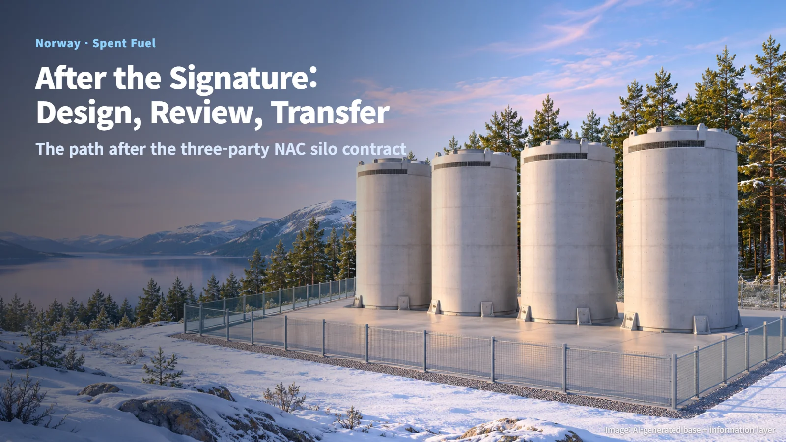
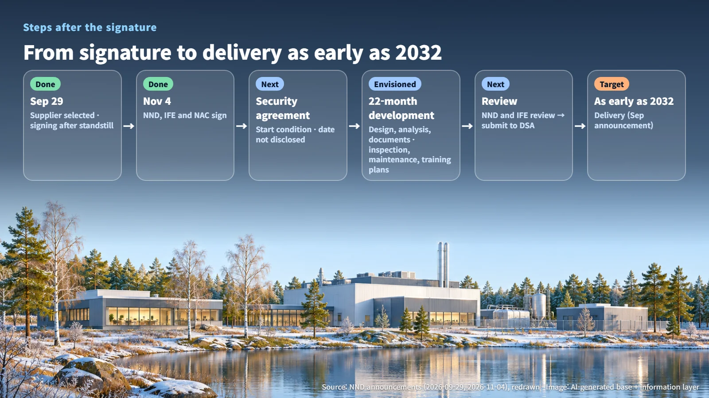
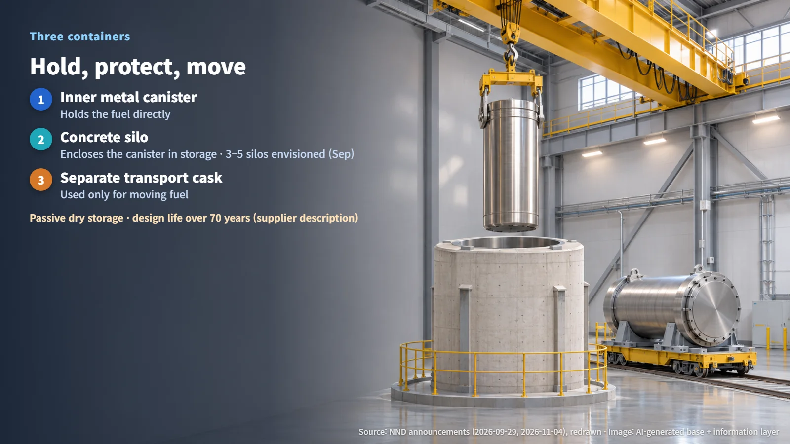
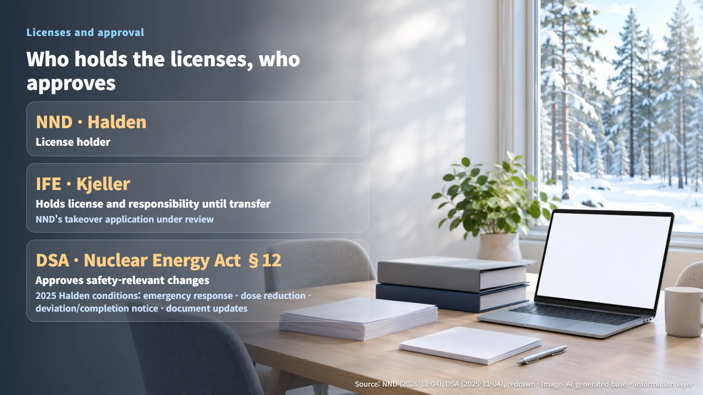

Norway · Spent Fuel
Norway Signs Its Spent Fuel Storage Contract: NAC's 22-Month Silo Development and the Licensing Path Ahead
NND, IFE and NAC signed a storage silo contract on November 4; a security agreement, 22 months of development and regulatory review come next.
Norway has signed a contract for new storage equipment to hold its spent nuclear fuel. After a signature come design, review, regulatory assessment and installation, one after another. This post follows up on the October 19 article, "Why Norway Is Sending Its Spent Fuel to Sweden, Only to Take It Back," and looks at what has been settled since then and which steps remain.

From September's "Selection" to November's "Signature": What Is Now Settled
On November 4, 2026, the Norwegian Nuclear Decommissioning agency (NND), the Institute for Energy Technology (IFE) and US-based NAC International signed a three-party supply contract for spent nuclear fuel storage silos. Four bids were submitted, and NAC was selected after an evaluation of price and quality. The fuel in the existing storage facilities has to move into a new storage system before the follow-on decommissioning of the research facilities can begin, so this contract is the first gate on the road to decommissioning.
The September 29 announcement covered the supplier selection stage, and its "Veien videre" (The Way Forward) section stated that the contract would be signed once the statutory standstill period had ended. On November 4, that signature took place. The scope of development has also become more concrete. In September, NND said detailed plans and solutions would be developed; in November, the development scope was described as design, analysis and documentation work, together with plans for inspection, maintenance and training.
Laid out in order, the sequence looks like this: signature → security agreement → NAC's 22-month development period (as envisioned) → review by NND and IFE → submission to and assessment by the authorities → installation → the September announcement's target of "delivery as early as 2032." NAC set the conclusion of the required security agreement as a condition for starting work, so the 22-month clock starts from the date that security agreement is concluded. The security agreement date, detailed design values, individual approvals and a firm fuel transfer date have not yet been made public. What this signature changes is that the supplier is now confirmed and the conditions for starting development are clear; after the 22 months, the review, assessment and installation stages still follow.

Three Containers: One to Hold, One to Protect, One to Move
The selected solution is built around three containers. An inner metal canister holds the fuel directly, a concrete silo encloses and protects that canister during storage, and a separate transport cask is used only when the fuel is moved. Think of it as a lunchbox that holds the food, a safe that keeps the lunchbox during storage, and a dedicated carrying case for when it has to travel.

In its November description, NAC presented the system as passive dry storage with a design life of more than 70 years (the supplier's description). Wet storage keeps fuel submerged in a water-filled pool, where the water removes heat and blocks radiation, so the cooling systems require continuous management. Dry storage keeps fuel inside a dry container, relying on thick structures and natural air circulation to carry heat away while shielding radiation. "Passive" means the structure itself maintains these functions without active equipment such as pumps.
The September materials described a concept of storing the entire inventory in three to five silos, along with the possibility of reopening them later for inspection, treatment or relocation. The actual number of silos will be set by the storage strategy and by whether the fuel undergoes treatment. Because storage and movement are handled by different containers, the way the storage canister and the transport cask connect becomes a key design condition.
Who Holds the Licenses, and Who Approves
As of the November announcement, NND holds the license for the Halden facility. For the Kjeller facility, NND's application to take over the license is under review, and IFE retains the license and responsibility until that transfer is complete. That is why NND and IFE signed the contract together. Because the two facilities have different responsible parties, the documentation and submission responsibilities for each facility follow the same division.
Approval authority rests with the Norwegian Radiation and Nuclear Safety Authority (DSA). DSA explains that, under Section 12 of the Nuclear Energy Act, changes to a facility's structures, operation or management that may affect safety require its approval. A useful reference case is DSA's November 4, 2025 approval of temporary structural reinforcement at the Halden wet storage facility. In that review, DSA examined the design, the period of use, safety during installation and human factors, and it also checked the effects on later decommissioning. The approval came with four conditions: (1) emergency preparedness during installation, (2) reduction of worker radiation exposure, (3) notification of deviations from the plan and of completion, and (4) a plan for updating the safety documentation.
Those four conditions show that the scope of review extends from design drawings all the way to installation work and operating documents. The specific approval conditions for the new silos will appear in the assessment documents still to come.

Fuel That Goes to Sweden and Comes Back, and the Next Milestones
On October 16, NND signed a contract with Sweden's Studsvik AB, establishing a route for sending Halden fuel to Sweden for inspection, preparation and interim storage. A preliminary study to be completed within six months will form the basis of the final schedule, and the actual shipment requires the necessary licenses from both countries.
This is where the NAC storage system takes on a second role. If the environmental soundness of the treatment cannot be ensured, NND has both the right and the obligation to demand the fuel's return, and under the contract the condition for return is that the fuel is in a state NND can take back into its custody. The storage system is also planned for fuel that returns to Norway after treatment, and some fuel may be stored in a way that runs alongside or complements treatment. That is why domestic storage capacity remains necessary even after fuel is shipped abroad.
The milestones to watch next are the conclusion of the security agreement, the results of the Studsvik preliminary study, the review of the Kjeller license transfer and the safety documentation to be submitted to DSA. As each of these steps behind a single signed contract is filled in, the real timeline for decommissioning Norway's research facilities will come into view.